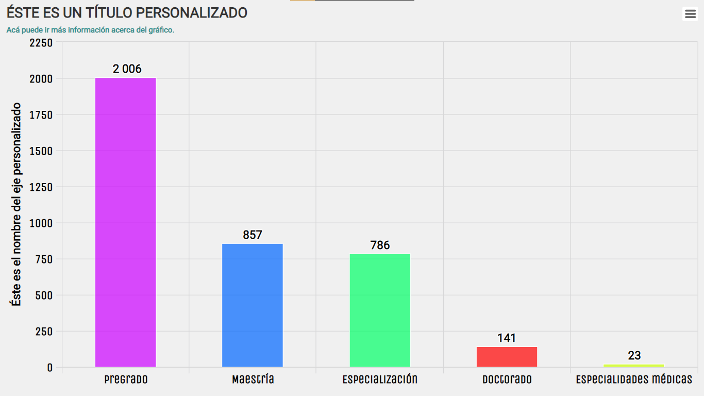

El paquete UnalR proporciona métodos y herramientas para mostrar y analizar datos estadísticos. Su objetivo es disponer, facilitar y optimizar la disposición de microdatos y la visualización de las cifras y estadísticas oficiales de la Universidad Nacional de Colombia. Contiene una biblioteca de funciones gráficas, tanto estáticas como interactivas, que ofrece numerosos tipos de gráficos con una sintaxis altamente configurable y simple. Entre estos encontramos la visualización de tablas HTML, series, gráficos de barras y circulares, mapas, etc. Todo lo anterior apoyado en bibliotecas de JavaScript.
El paquete UnalR permanecerá en su estado actual y se mantendrá solo con correcciones de errores.
Instalación
Puede instalar la versión publicada de UnalR (versión de desarrollo) desde GitHub con:
# install.packages("devtools")
devtools::install_github("estadisticaun/UnalR")
# install.packages("remotes")
remotes::install_github("estadisticaun/UnalR")Uso
Es difícil describir de manera sucinta cómo funciona UnalR porque encarna una profunda filosofía de visualización que abarca las principales librerías para representar de forma dinámica e interactiva datos usando JavaScript (htmlwidgets).
Ejemplo

example(topic = Plot.Series, package = "UnalR")
example(topic = Plot.Barras, package = "UnalR")
example(topic = Plot.Mapa, package = "UnalR")

Ayuda
Si requiere ayuda para usar UnalR:
- Para problemas de instalación, comuníquese a los correos electrónicos proporcionados en la documentación del paquete, normalmente respondemos con prontitud y usted también ayudará a futuros usuarios.
Si cree que ha encontrado un error:
- Instale la versión de desarrollo de
UnalRusandodevtools(ver arriba) y vea si eso ayuda. - Consulte los problemas de github.
¡Gracias por tu interés en UnalR!